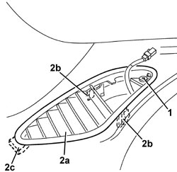

5010C53 AIR VENT IN DASHBOARD (ONE), LEFT OR RIGHT FOR DEMISTING SIDE WINDOWS - R.R.
- Path
- Procedures > 50 AUXILIARY UNITS > 5010 CLIMATE CONTROL - MISCELLANEOUS > 5010C AIR VENTS > 5010C53 AIR VENT IN DASHBOARD (ONE), LEFT OR RIGHT FOR DEMISTING SIDE WINDOWS - R.R.
- Kind
- repair procedure (removal / refitting; the operation number is the code)
- Applies to
- all engines; all production periods
- Interactive page
- https://sloeber94.github.io/elrnDB-aBrrSpdr/en/#/946002252
Applies to: all engines; all production periods
 Removing
Removing
 Refitting
RefittingOp. 5570T92 FRONT TWEETER (ONE), LEFT OR RIGHT - R.R
1. Undo the bolt.
2. Remove the vent (2a) releasing the flexible retainers (2b), the the rigid retainer (2c).

Applies to: all engines; all production periods
Refitting
Removing- Check that the vent is not damaged.
- Position the vent and attach the retainers.
- Tighten the bolt.